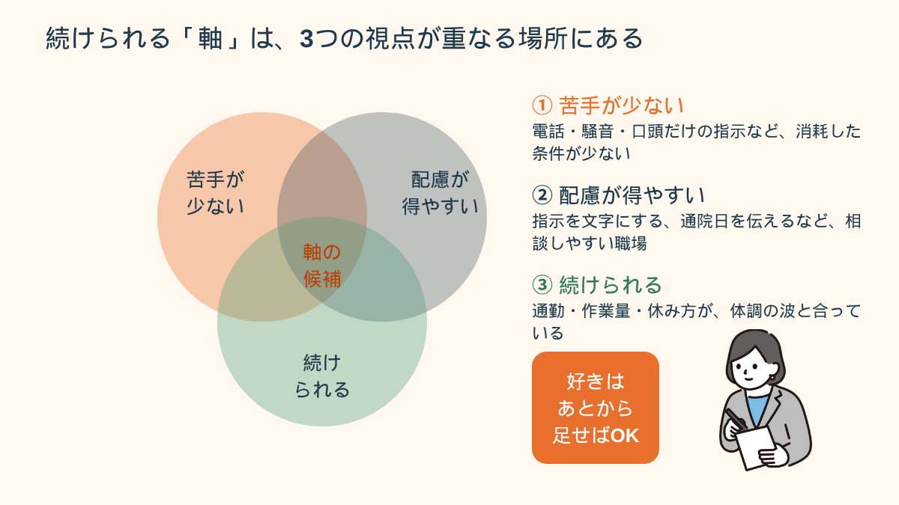
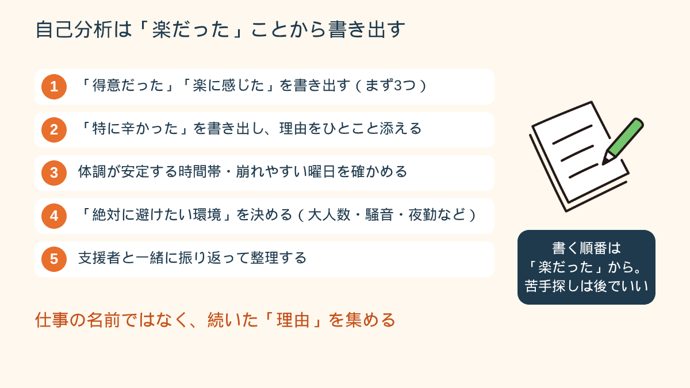
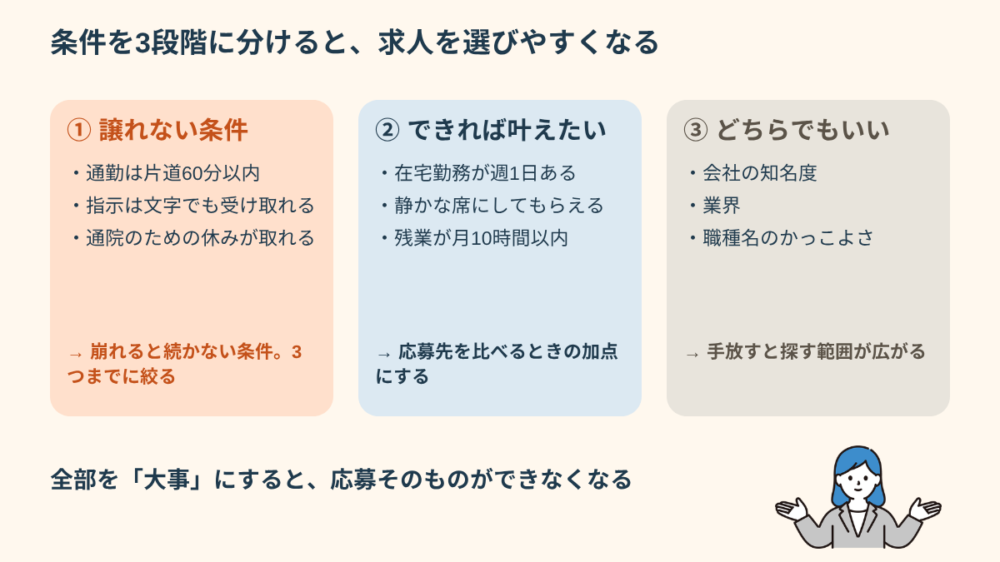
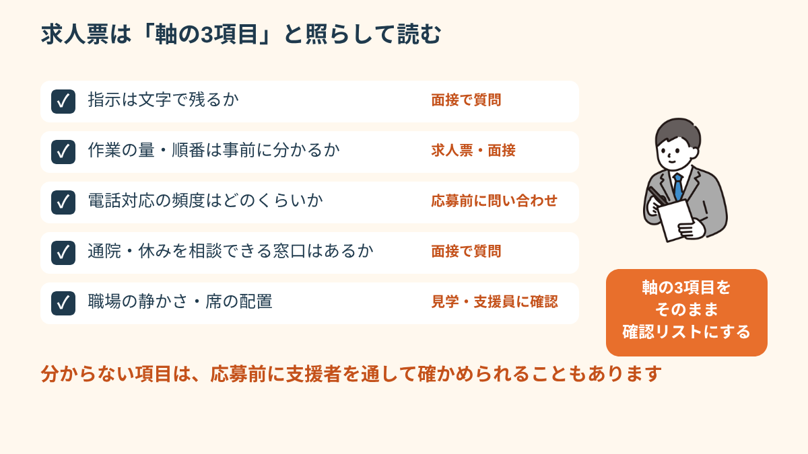
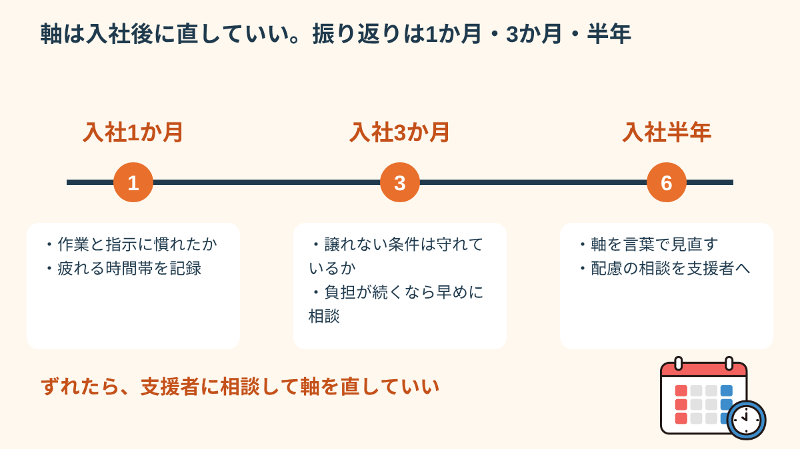

最初に伝えたいのは、軸が決まっていないのは、あなたの考えが足りないからではない、ということです。この記事では、「続けられること」を土台にして、軸を言葉にしていく手順を、書き出し方の例や面接での使い方まで順番にお渡しします。全部を一度にやる必要はありません。気になる章から読んでください。
「軸がない」は当然のスタート地点
「就職の軸を決めろと言われても、分からない」。これは珍しいことではありません。特に障害のある方は、過去に仕事でうまくいかなかった経験が重なって、「自分に何が合うのか」という感覚そのものを持てなくなっていることがあります。うまくいかなかった理由が、仕事の内容ではなく、騒がしさや指示の出し方といった環境だったとしても、本人の中では「自分がダメだった」という記憶だけが残りやすいからです。
だから、軸が「ない」のではなく、「見えなくなっている」と考えてみてください。軸は最初から正解として出てくるものではなく、経験を思い出して、少しずつ形になるものです。いきなり「やりたいこと」を探そうとすると、答えが出ずに止まってしまいます。まずは「これなら続いた」「これは消耗した」という事実を並べるところから始めるほうが、はるかに早く進みます。
たとえば、接客のアルバイトが続かなかった人が、「自分は人と話す仕事が向いていない」と結論づけることがあります。けれど振り返ってみると、苦しかったのは話すことではなく、「同時に複数のことを頼まれる」「忙しい時間帯に何を優先するか自分で決める」ことだった、というケースは少なくありません。この違いが分かると、探す仕事の範囲がまるで変わります。
軸を考えるときの土台は、次の3つの視点です。「苦手が少ない」「配慮が得やすい」「続けられる」。この3つが重なる場所を探します。好きかどうか、憧れるかどうかは、そのあとで足して構いません。

軸を決めるための自己分析の方法
自己分析というと、長い質問シートを埋める作業を思い浮かべて、それだけで疲れてしまう方もいます。ここでは、一人でも、支援者と一緒でも進められるように、書き出す項目を絞りました。順番にも意味があります。「得意・楽だったこと」から先に書くと、気持ちが沈みにくいからです。
- 過去の仕事・学校で「これは得意だった」「楽に感じた」を書き出す（まず3つで十分です）
- 「これは特に辛かった・苦手だった」を書き出す（理由もひとこと添えます）
- 体調・気力が安定しやすい時間帯・状況を把握する（午前型か、午後型か、週の中で崩れやすい曜日はあるか）
- 「絶対に避けたい環境・条件」を明確にする（例：大人数・騒音・夜勤・急な予定変更）
- 支援者と一緒に振り返り・整理する機会を持つ

書き出すときのコツは、「出来事」と「理由」をセットにすることです。「事務のアルバイトは続いた」だけでは軸になりませんが、「事務のアルバイトは、手順書があって、質問する相手が決まっていたから続いた」まで書けると、そこが軸の材料になります。仕事の名前ではなく、続いた理由のほうを集めてください。
書き出した内容は、次のように整理すると軸の候補が見えてきます。
続いた理由：手順書がある／質問する人が決まっている／作業量が事前に分かる
消耗した理由：電話が突然鳴る／口頭だけの指示／昼休みも雑談に付き合う
→ 軸の候補：「指示が文字で残る」「作業の量と順番が事前に分かる」「電話対応が主業務ではない」
「就職活動で何がやりたいか全く分からなかった。支援員と話しながら、自分が繰り返しの作業が得意で、騒音に弱いことが分かった。それを軸にしたら求人を絞りやすくなった。」
この方のように、「やりたいこと」ではなく「得意な作業の型」と「苦手な環境」から軸を作ると、求人の数が減って、かえって選びやすくなります。自己分析が一人で進まないときは、支援者に話しながら整理するのがいちばん近道です。紙に書けなくても、話した内容を相手にメモしてもらうだけで構いません。
転職の軸を「譲れない・できれば・どちらでも」の3段階で並べる
「障害者 転職 軸」と検索される方の多くは、すでに一度働いた経験があり、「次こそ失敗したくない」という気持ちを抱えています。そのとき起こりやすいのが、条件を全部「大事」にしてしまうことです。給料も、通勤時間も、仕事内容も、人間関係も大事。もちろん全部大事です。けれど、全部を満たす求人はほとんどなく、探しているうちに疲れて、応募そのものができなくなります。
そこで、書き出した条件を3つの段階に分けます。
① 譲れない条件（3つまで）
これが崩れると、どんなに他が良くても続かない、という条件です。「通勤は片道60分以内」「指示は文字でも受け取れる」「通院のための休みが取れる」のように、体調と働き方に直結するものを選びます。数を3つまでに絞るのがポイントです。4つ以上あるときは、本当に譲れないのか、できればのほうに移せないかを考えます。
② できれば叶えたい条件
あると働きやすいが、なくても何とかなる条件です。「在宅勤務が週1日ある」「静かな席にしてもらえる」「残業が月10時間以内」など。応募先を比べるときの、加点として使います。
③ どちらでもいい条件
最初は大事に思えても、よく考えると自分には影響が小さい条件です。「会社の知名度」「業界」「職種名のかっこよさ」などが入ることが多いです。ここを手放せると、探す範囲が一気に広がります。

たとえば、前職で電話対応と急な割り込みに疲れ果てて退職した方の場合、「譲れない」は「電話が主業務ではない」「業務の割り込みが少ない」「通院日を事前に伝えられる」、「できれば」は「在宅の日がある」「静かな席」、「どちらでもいい」は「業界」「会社の規模」となるかもしれません。こう並べると、これまで見ていなかった業界の求人も候補に入ってきます。
もうひとつ大切なのは、「好きな仕事」と「続けられる仕事」の関係です。好きなことを仕事にして体調を崩した、という話は少なくありません。まず「続けられる」を土台にして、その上で好きなことを少し足す。この順番で考えると、失敗しても立て直しやすくなります。
面接で「就職の軸は何ですか」と聞かれたときも、この3段階がそのまま使えます。「私が大切にしているのは、指示が文字で残ることと、作業の量が事前に分かることです。この2点があると、安定して力を出せます」と話せれば、配慮の相談にもつながります。面接での障害の伝え方は、面接での障害の伝え方の記事も参考にしてください。
軸を決めたあとにつまずきやすい3つの場面と、次の一手
軸ができても、そこで終わりではありません。実際に動き出すと、「頭では分かっているのに、求人票を見ると迷う」「面接で軸を聞かれて言葉が出ない」「入社したら、思っていたのと違った」という場面が出てきます。ここでは、つまずきやすい3つの場面と、その次の一手を整理します。
場面1：求人票を見ても、軸と合うか分からない
求人票には、仕事内容や給与は書いてあっても、指示の出し方や職場の静かさまでは書かれていないことが多いです。そのため、軸の項目をそのまま「確認することリスト」に変えます。「指示は文字で残るか」「作業の量は事前に分かるか」「電話対応の頻度はどのくらいか」など。分からない項目は、応募前の問い合わせや、ハローワーク、障害者就業・生活支援センター、就労移行支援の支援員を通じて確認できる場合があります。

場面2：面接で軸を聞かれて、言葉が出ない
緊張すると、準備した内容が真っ白になることがあります。対策は、軸を「1文」にしておくことです。長く話そうとせず、「私が働くうえで大切にしているのは○○です。理由は△△だからです」の形だけ覚えておきます。支援者との模擬面接で、実際に声に出して練習しておくと、本番での言葉の出やすさが変わります。
場面3：入社したら、軸とずれていた
ずれが分かること自体は失敗ではなく、軸の精度が上がる大事な情報です。ただ、1人で抱え込むと「やっぱり自分はダメだ」という考えに引きずられてしまいます。入社後1か月、3か月、半年のタイミングで、「続いていること」と「消耗していること」を書き出し、支援者や職場の担当者に相談してください。配慮の調整で解決することもあれば、軸そのものを直したほうがいいこともあります。体調を崩しそうなときは、早めの相談が大切です。体調管理の考え方は障害のある方の体調管理の記事で、「自分はダメだ」という気持ちが強いときは自己肯定感が低いときの記事で触れています。
